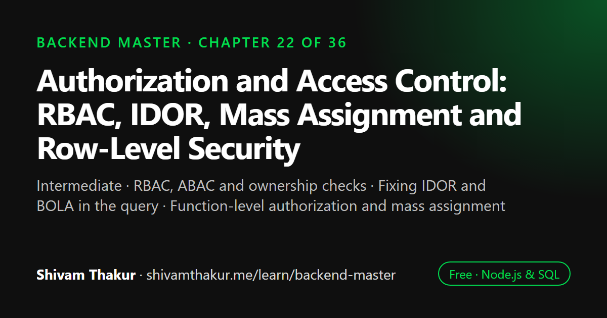

Chapter 22 of 36 · Intermediate
Authorization and Access Control: RBAC, IDOR, Mass Assignment and Row-Level Security
Authorization and Access Control — Who May Do What

Authorization decides what an authenticated user may do, and broken access control is the top web vulnerability. This chapter attacks a small API with IDOR, a missing role check and mass assignment, fixes each, builds a central default-deny policy function, and enforces tenant isolation with PostgreSQL row-level security and its three traps.
In this chapter you will learn
- RBAC, ABAC and ownership checks
- Fixing IDOR and BOLA in the query
- Function-level authorization and mass assignment
- A central default-deny policy
- Row-level security for multi-tenant data
22.0 Why This Chapter Matters
Chapter 21 answered "who are you?" This chapter answers the harder, more dangerous question: "what are you allowed to do?"
It is dangerous because authentication bugs are loud (nobody can log in) while authorization bugs are silent: everything works perfectly for the honest user, and nobody notices that changing /orders/101 to /orders/102 shows a stranger's order. Broken access control consistently tops vulnerability lists: it is #1 in the OWASP Top 10 (2021) and API1, "Broken Object Level Authorization," in the OWASP API Security Top 10 (2023). Most large data breaches through APIs are exactly this bug.
The bug is easy to write because an authenticated request looks completely legitimate: the token is valid, the user exists, the route exists. Only a missing question ("is this your order?") separates a feature from a breach.
In this chapter we build a small API and attack it four ways, then fix each:
- BOLA/IDOR: reading other users' (and other tenants') orders by changing an id.
- Function-level: a customer calling an admin endpoint someone forgot to protect.
- Mass assignment: promoting yourself to admin by adding one field to a JSON body.
- Central policy: moving every decision into one default-deny
can(user, action, resource).
Then we push the rule down into the database with PostgreSQL row-level security, and test its failure modes (including the one that silently disables it).
22.1 The Vocabulary
| Term | Meaning | ShopLine example |
|---|---|---|
| Subject / principal | Who is acting | user 1 (Asha) |
| Action | What they attempt | order:cancel |
| Resource | What it targets | order 104 |
| Policy | The rule deciding allow/deny | "owner may cancel a pending order" |
| Role | A named bundle of permissions | customer, support, admin |
| Scope | A permission embedded in a token | orders:read |
| Tenant | An isolated customer organisation | shop A vs shop B |
Two principles to tattoo on your brain:
Default deny: if no rule explicitly allows an action, it is denied. Check on the server, every time, at the resource: the UI hiding a button is cosmetics; the API is the only thing an attacker talks to.
Authorization models
| Model | Decision based on | Good for | Weakness |
|---|---|---|---|
| ACL (access control list) | A list of users on each resource | Sharing documents | Doesn't scale to many resources |
| RBAC (role-based) | The user's role | "Admins can refund" | Role explosion; can't express ownership alone |
| ABAC (attribute-based) | Attributes of user, resource, context (owner, status, time, tenant) | Rich rules: "owner can cancel while pending" |
Rules scattered unless centralised |
| ReBAC (relationship-based) | Graph of relationships (member-of, owner-of, parent-of) | Google-Docs-style sharing | Needs a relationship store (OpenFGA, SpiceDB) (not run) |
Real systems combine them: RBAC for coarse permissions, ABAC/ownership for the object. Our API uses exactly that.
22.2 The Test Bed
Five users in two tenants (shops) and four orders:
users: 1 Asha (customer, tenant 1) 2 Ravi (customer, t1) 3 Meera (customer, tenant 2)
4 Root (admin, t1) 5 Sam (support, t1)
orders: 101 Asha paid 31500 102 Ravi paid 99900 103 Meera shipped 5000 (tenant 2) 104 Asha pending 1500Authentication is a JWT with sub, role, tenant (Chapter 21); a middleware sets req.user = { id, role, tenant }. Each vulnerability has a /v1/... (bad) and /v2/... (fixed) version.
22.3 Attack 1: BOLA / IDOR (Broken Object Level Authorization)
IDOR = Insecure Direct Object Reference; BOLA is the API-era name. The vulnerable handler:
app.get('/v1/orders/:id', authn, async (req, res) => { // authenticated... but whose order?
const { rows: [o] } = await pool.query('SELECT * FROM orders WHERE id = $1', [req.params.id]);
o ? res.json(o) : res.status(404).json({ title: 'not found' });
});Asha (user 1, tenant 1) asks for Ravi's order and for Meera's order in a different shop:
v1 (no ownership check) GET /v1/orders/102 200 {"id":102,"user_id":2,"tenant_id":1,"status":"paid","total_minor":99900,"shipping_address":"7 Nehru St, Delhi"
v1 GET /v1/orders/103 200 {"id":103,"user_id":3,"tenant_id":2,"status":"shipped","total_minor":5000,"shipping_address":"9 Park Ave, MumbaiBoth returned names, addresses and amounts of strangers. And because ids are sequential, an attacker needs only a loop:
enumerating ids 100..109 on v1 leaked 4 of 4 orders in the table (sequential ids make this trivial)The fix: ownership is part of the query
app.get('/v2/orders/:id', authn, async (req, res) => {
const { rows: [o] } = await pool.query(
'SELECT * FROM orders WHERE id = $1 AND user_id = $2 AND tenant_id = $3',
[req.params.id, req.user.id, req.user.tenant]);
o ? res.json(o) : res.status(404).json({ title: 'not found' }); // 404, not 403
});v2 (scoped query) GET /v2/orders/102 404 {"title":"not found"}
v2 GET /v2/orders/103 404 {"title":"not found"}
v2 her own order GET /v2/orders/101 200 {...}Three design points:
- Put the check in the query, not "fetch then
if". It cannot be forgotten after the fetch, and the database never even returns the row. - Return
404, not403, for objects the caller may not see:403confirms "that order exists" (an enumeration oracle, Chapter 21's theme). - Unguessable ids (UUIDs) are not a fix. They make enumeration harder, which is good defence in depth, but ids leak (logs, emails, referrers, shared links). The check is the fix; the UUID is a seatbelt, not the brakes.
22.4 Attack 2: Function-Level Authorization (BFLA)
A different gap: an entire endpoint meant for admins that nobody protected.
app.get('/v1/admin/users', authn, async (req, res) => res.json((await pool.query('SELECT id, email, role FROM users')).rows)); // forgot the role checkv1 (forgot the role check) Asha GET /v1/admin/users 200 [{"id":1,"email":"asha@a.com","role":"customer"},{"id":2,...
v2 Asha GET /v2/admin/users 403 {"title":"forbidden"}
v2 Root GET /v2/admin/users (own tenant only) 200 [...tenant 1 users only]The fix is a role gate plus tenant scoping in the query:
const requireRole = (...roles) => (req, res, next) => (roles.includes(req.user.role) ? next() : res.status(403).json({ title: 'forbidden' }));
app.get('/v2/admin/users', authn, requireRole('admin'), async (req, res) =>
res.json((await pool.query('SELECT id, email, role FROM users WHERE tenant_id = $1', [req.user.tenant])).rows));Note that "admin" here means admin of their tenant: Root saw only tenant 1's users, not Meera. A frequent, serious mistake is a global admin role in a multi-tenant system.
Make "forgot to protect it" structurally hard: apply authentication by default at the router level (app.use('/api', authn)), with a short, explicit allow-list of public routes, rather than adding authn to each route. Admin routes live under a router that has requireRole('admin') applied once. The safe path should be the lazy path.
22.5 Attack 3: Mass Assignment
The handler for "update my profile":
app.patch('/v1/me', authn, async (req, res) => {
const cols = Object.keys(req.body); const vals = Object.values(req.body);
await pool.query(`UPDATE users SET ${cols.map((c, i) => `"${c}" = $${i + 2}`).join(', ')} WHERE id = $1 RETURNING id, name, role`, [req.user.id, ...vals]);The honest client sends {"name": "Ravi K"}. The attacker sends one extra field:
PATCH /v1/me {"name":"Ravi K","role":"admin"} 200 {"id":2,"name":"Ravi K","role":"admin"}
Ravi is now: admin <- privilege escalation by adding one JSON fieldThe client decided which columns get written. The same flaw has hit ORMs that bind a whole request body to a model (User.update(req.body)), famously on GitHub in 2012.
It's worse here: the code interpolates the key names into SQL. A key crafted as name" = 'x', "role rewrote the query itself:
v1 column-name injection {"name\" = 'x', \"role": "admin"} 200 {"id":2,"name":"x","role":"admin"}That is SQL injection through JSON keys, the identifier-injection warning from Chapter 13 made real.
The fix: an allow-list of fields, and typed values
const EDITABLE = ['name', 'email'];
const body = Object.fromEntries(Object.entries(req.body).filter(([k, v]) => EDITABLE.includes(k) && typeof v === 'string'));
if (!Object.keys(body).length) return res.status(400).json({ title: 'nothing editable supplied' });
const cols = Object.keys(body); // now guaranteed to be from OUR list, so safe to place in SQLv2 (allow-list) 200 {"id":2,"name":"Ravi K","role":"customer"} ← name changed, role ignoredBest practice: validate input with Zod (Chapter 7) using a strict schema (.strict() rejects unknown keys, .pick() for editable fields) so extra fields produce a 400 instead of being silently dropped, and keep separate input schemas for separate roles (a customer can't send role; an admin endpoint can).
22.6 A Central Policy: One Place for Every Decision
Scattering if (order.user_id === req.user.id) across fifty handlers guarantees one will be wrong. Put the rules in one pure function that's easy to read, review and unit-test:
const POLICY = {
'order:read': (u, o) => o.tenant_id === u.tenant && (o.user_id === u.id || ['admin', 'support'].includes(u.role)),
'order:cancel': (u, o) => o.tenant_id === u.tenant && o.status === 'pending' && (o.user_id === u.id || u.role === 'admin'),
'order:refund': (u, o) => o.tenant_id === u.tenant && u.role === 'admin',
};
const can = (u, action, resource) => (POLICY[action]?.(u, resource) ?? false); // unknown action => false (default deny)And a handler that loads, then asks the policy, using two different failure codes on purpose:
if (!o || !can(req.user, 'order:read', o)) return res.status(404)... // can't even see it → pretend it doesn't exist
if (!can(req.user, action, o)) return res.status(403)... // can see it but not do that → 403Test output (RBAC + ownership + state + tenant, all in one place):
Asha cancels her pending order 104 200
Asha cancels her PAID order 101 403 ← ownership OK, but state forbids it (ABAC)
Asha refunds her own order 101 (admin only) 403 ← ownership isn't enough; role needed (RBAC)
Sam (support) reads Asha's order 101 200 ← role grants read
Sam (support) refunds order 101 403
Root (admin) refunds order 101 200
Root (tenant 1) touches Meera's order 103 404 ← admin of tenant 1 can't see tenant 2 at all
unknown action "delete" (not in policy) 403 ← default deny
anonymous call 401The two-step response is subtle and valuable: 404 when you shouldn't know the object exists (Root vs Meera's order), 403 when you can see it but lack the right (Sam refunding).
Where policy code lives
- Simple apps: a
can()function like the above, unit-tested exhaustively (a table of user × action × resource → expected result). - Larger apps: a policy library: CASL (JS), Casbin (many languages), or a policy engine: OPA/Rego, AWS Cedar; relationship-heavy products: OpenFGA / SpiceDB (Google Zanzibar model). (None run here.)
- List endpoints ("all my orders") need the same rules as a filter, not a per-row check (
WHERE user_id = $1 AND tenant_id = $2), or you'll fetch everything and filter in memory (slow, and one bug from a leak). Policy libraries that compile rules to query conditions help.
Authorization and the layers (Chapter 11)
The policy belongs in the service layer (so every entry point, HTTP, a queue worker, an admin script, gets it), taking the acting user as an explicit argument: orderService.cancel(actor, orderId). Never rely on the controller alone, and never let a service method that mutates data run without an actor.
22.7 Roles, Tokens, and Stale Permissions
Our JWT carries role and tenant, so the server needs no database call to authorise. The cost, from Chapter 21: a token's claims are frozen until it expires.
- If Root is demoted at 10:00 but holds a token issued at 09:55 (10-minute expiry), they remain
adminuntil 10:05. - Keep access tokens short-lived, and for sensitive actions (refunds, role changes) re-check the current role in the database, don't trust the claim alone.
- Scopes (
orders:read orders:write) in tokens limit what a token can do, useful for third-party apps and API keys ("this key can read orders but not refund"); the user's rights and the token's scopes must both allow the action (the intersection). - Never put authorization decisions on client-supplied data (a
rolein the request body, a hidden form field, an unsigned cookie, a header likeX-Is-Admin).
Privilege-escalation checkpoints
Changing roles/permissions is itself a protected action; require a higher role, re-authentication / MFA (Chapter 21), and an audit log entry ("Root granted admin to Sam"). Make sure nobody can grant a role higher than their own.
22.8 Multi-Tenancy: One Missed WHERE Away From a Breach
If several customers (tenants) share the same tables, every query must be scoped by tenant. Application-level scoping (AND tenant_id = $3) works, until someone forgets it once. Defence in depth: let the database enforce it too. PostgreSQL Row-Level Security (RLS) attaches a filter to the table itself.
ALTER TABLE orders ENABLE ROW LEVEL SECURITY;
CREATE POLICY tenant_isolation ON orders
USING (tenant_id = NULLIF(current_setting('app.tenant_id', true), '')::int) -- which rows are visible/updatable
WITH CHECK (tenant_id = NULLIF(current_setting('app.tenant_id', true), '')::int); -- which rows may be writtenThe application sets the tenant per transaction right after checking out a connection:
await c.query('BEGIN');
await c.query(`SELECT set_config('app.tenant_id', $1, true)`, [String(tenant)]); // true = local to this transaction
/* ... queries run here are filtered by the policy ... */
await c.query('COMMIT');What the tests showed
superuser (bypasses RLS entirely!) 101(t1) 102(t1) 103(t2) 104(t1)
app_user, tenant NOT set (fails closed) (no rows)
app_user, tenant 1 (set locally in the transaction) 101(t1) 102(t1) 104(t1)
app_user, tenant 2 103(t2)
tenant 1 inserting a row for tenant 2 -> 42501 new row violates row-level security policy for table "orders"
tenant 1 UPDATE on tenant 2 order 103 -> rowCount 0 (row invisible, so nothing matched)
even a forgotten-WHERE / injected "OR 1=1" only sees tenant 1: 3 rows- With the setting absent, the policy compares to
NULL, so no rows are visible: it fails closed. (That's why the policy usescurrent_setting(..., true), which returns NULL instead of erroring, plusNULLIF.) - A forgotten
WHEREor even an injectedOR 1=1can only reach the caller's tenant. The database is the last line of defence. WITH CHECKstopped tenant 1 from writing a row into tenant 2 (42501).
The three RLS traps (all demonstrated)
1. Superusers and BYPASSRLS roles ignore RLS. The first line of output: connecting as postgres shows every row. Your application must connect as an ordinary, non-owner role (NOSUPERUSER NOBYPASSRLS), with only the grants it needs. A test suite that connects as the superuser will never notice a missing policy.
2. Table owners bypass RLS unless it is FORCEd.
as table OWNER, no tenant set sees 4 rows ← RLS silently not applied
after FORCE ROW LEVEL SECURITY sees 0 rowsIf your app role owns the table (common when migrations and the app share one role), RLS does nothing until ALTER TABLE … FORCE ROW LEVEL SECURITY. Best practice: migrations run as an owner role; the app uses a separate, limited role.
3. A pooled connection leaks a session-level setting.
await c.query(`SELECT set_config('app.tenant_id', '2', false)`); // false = SESSION-level: persists on the connection
c.release(); // returned to the pool still carrying tenant 2
// the next request, which forgot to set a tenant, gets the same connection:
request B never set a tenant but sees tenant 2 rows: 1 <- session-level setting leaked through the poolWith is_local = true inside a transaction (as in the code above), the setting vanishes at COMMIT/ROLLBACK. Always set tenant context transaction-locally, or reset it on release. This is the exact pool.query('BEGIN') hazard of Chapter 16 in another costume.
RLS in practice
RLS is excellent for tenant isolation and a safety net for "users see only their rows." It adds a small planning overhead (not measured here); put an index on tenant_id (Chapter 15) and keep policies simple. It does not replace function-level checks or business rules, which still live in the policy function. Debugging gets harder (queries "mysteriously" return fewer rows), so keep policies documented and tested. Alternatives: schema-per-tenant or database-per-tenant (stronger isolation, much more operational work).
22.9 Testing Authorization
Authorization bugs hide because normal tests log in as the right user. Write tests as the wrong user:
// a matrix: every endpoint × every actor → expected status
const cases = [
['GET', '/v2/orders/101', 'Asha', 200],
['GET', '/v2/orders/101', 'Ravi', 404], // another customer
['GET', '/v2/orders/101', 'Meera', 404], // another tenant
['GET', '/v2/admin/users', 'Asha', 403],
['GET', '/v2/admin/users', 'Root', 200],
['GET', '/v2/orders/101', null, 401], // anonymous
];Also: a test that walks every registered route and fails if any lacks an auth middleware or an explicit public annotation; fuzzing of id parameters with another user's token; and negative tests for mass assignment (send role, tenantId, userId, isAdmin, id). Run them in CI (Chapter 24).
22.10 Edge Cases and Gotchas Checklist
-
WHERE id = $1with no ownership/tenant condition (BOLA). - Authorization only in the UI or only in the controller (the service/jobs/scripts bypass it).
-
authnadded per route, so a new route ships public; no default-deny router. - Admin endpoints without a role gate; a global admin in a multi-tenant system.
-
403revealing that a foreign object exists (prefer404). - Binding request bodies directly to models/columns (mass assignment); key names placed in SQL.
- Trusting client-supplied
role,userId,tenantId,isAdmin. - List/search/export endpoints that forget the filter the detail endpoint has.
- Bulk endpoints (
/orders?ids=1,2,3) authorising only the first id. - Authorization checked at read but not at write/delete; or checked once at the start of a multi-step flow but not at each step.
- Stale roles in long-lived tokens; no re-check for sensitive actions.
- Unguessable ids treated as the access control.
- Nested resources:
/shops/1/orders/102authorising shop 1 but not that order 102 belongs to shop 1. - RLS: app connects as superuser/owner; session-level
set_configleaking across pooled connections; policy lackingWITH CHECK. - No tests that act as the wrong user.
- Authorization failures not logged (you'll never see the probing).
22.11 Chapter Summary
- AuthZ answers "may this subject do this action on this resource?" Rules: default deny; server-side, at the resource, every time.
- Models: ACL, RBAC (roles), ABAC (attributes/ownership/state), ReBAC (relationships). Real systems mix RBAC for coarse + ABAC for object-level.
- BOLA/IDOR (OWASP API #1): the v1 endpoint returned other users' and other tenants' orders; sequential ids leaked 4 of 4. Fix: put ownership + tenant in the query, return 404 for foreign objects; UUIDs are only defence in depth.
- Function-level: an unguarded admin route exposed all users; fix with a router-level default plus
requireRole, scoped to the admin's own tenant. - Mass assignment: adding
"role":"admin"to a PATCH promoted a customer, and unvalidated key names enabled SQL injection via JSON keys. Fix: allow-list fields and validate types (strict Zod schemas). - A central
can(user, action, resource)policy (default deny,404vs403by visibility) made RBAC + ownership + status + tenant rules reviewable and testable; services take an explicitactor. - Token claims go stale; re-check sensitive actions; scopes intersect with user rights.
- Row-level security gives DB-enforced tenant isolation: fails closed, blocks cross-tenant writes (
42501), neutralises forgottenWHEREs, but superusers/owners bypass it, and session-level settings leak through connection pools: useset_config(..., true)in a transaction, a non-owner app role, andFORCE ROW LEVEL SECURITY. - Test as the wrong user: a user × endpoint × expected-status matrix.
22.12 Revision Notes
WHERE id = $1 AND user_id = $2 AND tenant_id = $3; foreign object → 404.- Missing role → 403; missing/invalid token → 401.
- Allow-list editable fields; strict schemas; never put keys in SQL.
- One
can()function; unknown action = deny; services takeactor. - RLS:
ENABLE(+FORCEfor owners),USING+WITH CHECK,set_config('app.tenant_id', $1, true), non-superuser app role. - Short access tokens; re-check sensitive actions; audit privilege changes.
- Test matrix as the wrong user; walk routes for missing auth.
22.13 Mind Map (ASCII)
AUTHORIZATION
│
┌──────────┬─────────────┼──────────────┬────────────────┐
MODELS ATTACKS DEFENCES MULTI-TENANT TESTING
│ │ │ │ │
RBAC BOLA/IDOR ownership in tenant_id wrong-user
ABAC BFLA the query scoped queries matrix
ReBAC mass allow-lists RLS (DB-enforced) route walker
ACL assignment can() default FORCE RLS, no mass-assign
stale roles deny, 404/403 superuser negative tests
key injection actor in service set_config local22.14 Cheat Sheet
// object level: SELECT … WHERE id = $1 AND user_id = $2 AND tenant_id = $3 → 0 rows ⇒ 404
// function level: router.use('/admin', authn, requireRole('admin'))
// mass assignment: pick(body, ['name','email']) + typeof checks, or z.object({...}).strict()
// policy: can(actor, 'order:cancel', order) — unknown action ⇒ falseALTER TABLE orders ENABLE ROW LEVEL SECURITY; ALTER TABLE orders FORCE ROW LEVEL SECURITY;
CREATE POLICY tenant_isolation ON orders
USING (tenant_id = NULLIF(current_setting('app.tenant_id', true), '')::int)
WITH CHECK (tenant_id = NULLIF(current_setting('app.tenant_id', true), '')::int);
CREATE ROLE app LOGIN NOSUPERUSER NOBYPASSRLS; -- the app connects as THIS
-- per request, inside BEGIN: SELECT set_config('app.tenant_id', $1, true);22.15 Key Takeaways
- Authenticated ≠ authorised. Ask "whose is this?" on every id.
- Default deny; check on the server; put the check in the query/policy, not in the UI.
- Never let the client choose which fields or which identity: allow-list fields, take identity from the token.
- One policy function, called from the service layer with an explicit actor.
- Defence in depth for tenants: RLS, with a non-owner role, transaction-local settings.
- Test as the wrong user.
22.16 20 Multiple Choice Questions
Tap an answer to check it. Your score updates as you go.
Score: 0 / 0 answered (20 questions)
BOLA stands for:
The v1 order endpoint was vulnerable because it:
Where is the best place for the ownership check?
Returning
404for another user's order (instead of403):UUID ids as a BOLA fix are:
BFLA is:
Mass assignment happens when:
Which fix stops
{"role":"admin"}in a PATCH?Interpolating JSON keys into SQL leads to:
can(user, 'order:delete', o)for an action not in the policy returns:Why return
404for read-denied but403for action-denied?Authorization logic belongs primarily in:
A JWT
roleclaim can be stale because:RLS fails closed when the tenant setting is unset because:
Which role ignores RLS by default?
set_config('app.tenant_id', '2', false)on a pooled connection:WITH CHECKin a policy:An admin in a multi-tenant app should usually be:
The most effective test for access control bugs is:
Which statement about scopes is true?
Show the answer key
1-a, 2-b, 3-b, 4-b, 5-b, 6-a, 7-b, 8-b, 9-b, 10-b, 11-b, 12-b, 13-b, 14-b, 15-b, 16-b, 17-b, 18-b, 19-b, 20-b
22.17 20 Hands-on Exercises
(Use resources/ch22/; read its README first.)
Easy
- Reproduce the v1 IDOR; then fix it with an ownership condition and confirm
404. - Loop over ids 1–200 with another user's token and count leaked records.
- Add
authnas router-level middleware with an explicit public allow-list. - Send
{"role":"admin"}to the vulnerable PATCH and observe the escalation. - Implement an
EDITABLEallow-list and confirm the role is ignored.
Medium
- Replace the allow-list with a strict Zod schema that returns
400on unknown keys. - Write the user × endpoint × expected-status test matrix and run it in CI.
- Implement
can()forproduct:update,product:delete,review:delete(author, moderator, admin) with unit tests for every combination. - Make a list endpoint (
GET /orders) enforce the same rules as the detail endpoint via a filter. - Add a route-walker test failing when any route lacks auth middleware or a
publicmarker. - Implement scoped API keys (
orders:read) and enforce the intersection with the key owner's rights. - Re-check the current role in the database for refunds and show a demoted admin is blocked immediately despite a valid token.
Hard
- Enable RLS on
ordersandorder_items; verify with a non-owner role; reproduce all three traps. - Build a
withTenant(tenantId, fn)helper (transaction-local) used by every repository; add a lint/test forbidding rawpool.queryin modules. - Measure RLS overhead with
EXPLAIN ANALYZEon 1M rows with/without an index ontenant_id. - Implement hierarchical roles and delegation (support manager can grant
support, neveradmin); prevent escalation loops. - Add an audit log for every denied decision and every role change; build a "suspicious probing" report.
- Model shared documents with ReBAC (owner/editor/viewer + folders) in SQL, then evaluate OpenFGA/SpiceDB for comparison.
- Fuzz every
:idroute with identifiers from other tenants using a property-based test. - Threat-model ShopLine's checkout and refund flows (STRIDE), listing each authorization assumption and the test that guards it.
22.18 5 Interview Questions
1. What is IDOR/BOLA and how do you prevent it? Model answer: The server accepts an object identifier from the client and returns or modifies the object without verifying the caller may access that object. Prevent by authorising at the object level on every access: include ownership/tenant in the query or call a central policy, return 404 for foreign objects, apply the same rules to lists and bulk operations, use unguessable ids as defence in depth only, and test with a second user.
2. Authentication vs authorization, and 401 vs 403?
Model answer: Authentication verifies identity; authorization decides permission. 401 means not (validly) authenticated; 403 means authenticated but not permitted. For objects the caller shouldn't know exist, return 404 to avoid an existence oracle.
3. What is mass assignment and how do you stop it?
Model answer: Binding client-supplied fields straight onto a model/columns so attackers set fields they shouldn't (role, tenantId, isAdmin). Use allow-lists or strict schemas per endpoint/role, never derive column names from request keys, take identity from the token, and add negative tests.
4. RBAC vs ABAC, and how would you implement them? Model answer: RBAC grants permissions by role (coarse, simple); ABAC evaluates attributes of the subject, resource and context (ownership, status, tenant, time). Real systems combine them in a central default-deny policy function (or a library/engine such as CASL, Casbin, OPA) called from the service layer with an explicit actor, plus query filters for lists.
5. How would you enforce multi-tenant isolation?
Model answer: Every tenant-owned table carries tenant_id, all queries scope by it, and uniqueness/FKs include it. Add PostgreSQL RLS as a safety net: policies with USING and WITH CHECK, an app role that is neither superuser nor owner (or FORCE RLS), and the tenant set with a transaction-local set_config to avoid leaking through the connection pool. Index tenant_id and test cross-tenant access explicitly.
22.19 3 Real Projects
Project 1: Authorization Audit of an API (intermediate, ~8 hours). Take an open-source or your own API; map every endpoint; build the user × endpoint matrix; find at least five BOLA/BFLA/mass-assignment issues (in a deliberately vulnerable app such as OWASP Juice Shop or crAPI, with permission); write fixes and regression tests.
Project 2: Policy Engine Module (intermediate–advanced, ~12 hours). Implement a reusable policy module (RBAC + ABAC conditions, default deny, explanations for decisions, list-filter generation to SQL), integrate it into ShopLine's services, and prove parity between the per-object check and the list filter with property tests.
Project 3: Multi-Tenant ShopLine with RLS (advanced, ~14 hours).
Convert ShopLine to multi-tenant with composite keys and RLS, a withTenant unit of work, per-tenant admin roles, cross-tenant attack tests, and benchmarks for RLS overhead and indexing.
22.20 Further Reading
- OWASP API Security Top 10 (2023), especially API1 (BOLA), API3 (Broken Object Property Level Authorization, which includes mass assignment), API5 (Broken Function Level Authorization).
- OWASP Cheat Sheets: Authorization, Insecure Direct Object Reference Prevention, Mass Assignment, Multi-Tenant Architecture.
- PostgreSQL documentation: Row Security Policies; Supabase's RLS guides (good practical patterns).
- Google's Zanzibar paper; OpenFGA, SpiceDB docs; CASL and Casbin docs; Open Policy Agent (Rego) and AWS Cedar.
- Web Application Security (Andrew Hoffman) and PortSwigger Web Security Academy (free labs on access control).
Up next → Chapter 23: Web and API Security
Beyond who and what: the attacks aimed at the transport and the browser: XSS, CSRF, CORS misconfiguration, injection in all its forms, SSRF, file-upload and path-traversal bugs, security headers (and Helmet), secrets management, dependency risk, and the OWASP checklist, with each attack reproduced against vulnerable code and then defeated.
Authorization: frequently asked questions
What is IDOR or BOLA?
An endpoint returns an object by id without checking the caller may access it, so changing the id exposes other users' data. Put ownership and tenant in the query and return 404 for foreign objects.
What is mass assignment?
Writing client-supplied fields straight onto a record, letting users set fields such as role. Use an allow-list of editable fields and strict schemas.
Should I return 403 or 404 for someone else's object?
Return 404 so you do not confirm the object exists. Use 403 when the user can see the object but lacks the right to perform the action.
What are the pitfalls of row-level security?
Superusers and table owners bypass it unless forced, and session-level settings can leak across pooled connections. Use a non-owner app role and set_config(..., true) inside transactions.